受邀成为Common Criteria(CC)的操作系统内核工作组成员
1/6/2018
德国SYSGO公司发来Email，邀请我加入Common Criteria(CC)的操作系统内核工作组，起草(多核)操作系统内核的security protection profile。SYSGO是欧盟的盟产自主可控、高安全工业操作系统产品厂商，CC工作组的召集人，研制了PikeOS工业操作系统。
随着物联网、工业互联网、工业4.0的快速发展，CC在工业各领域发挥越来越重要的作用。德国、法国、美国、加拿大等工业发达国家，每年都有许多产品通过EAL 5+以上的CC安全认证，包括安全设备、工业控制系统、安全操作系统、数据库等。工业知名的操作系统，如绿山INTEGRITY-178、风河VxWorks Cert等，均符合CC EAL 6安全级别。EAL 5级以上，要求采用形式化方法进行产品开发，这正是我们目前重点研究方向之一。
我国由于种种原因尚没有工业产品，过CC安全认证。希望CC安全认证及相关技术，对国内工业，尤其是安全关键基础设施的发展，带来积极的影响。
随着物联网、工业互联网、工业4.0的快速发展，CC在工业各领域发挥越来越重要的作用。德国、法国、美国、加拿大等工业发达国家，每年都有许多产品通过EAL 5+以上的CC安全认证，包括安全设备、工业控制系统、安全操作系统、数据库等。工业知名的操作系统，如绿山INTEGRITY-178、风河VxWorks Cert等，均符合CC EAL 6安全级别。EAL 5级以上，要求采用形式化方法进行产品开发，这正是我们目前重点研究方向之一。
我国由于种种原因尚没有工业产品，过CC安全认证。希望CC安全认证及相关技术，对国内工业，尤其是安全关键基础设施的发展，带来积极的影响。
实时操作系统标准研究成果得到美国波音公司等认可和接纳
14/10/2016
我们收到来自美国波音公司Associate Fellow、ARINC653国际标准委员会主席的致谢邮件，对我们在ARINC653航空航天实时操作系统标准的研究成果表示认可，并将在ARINC653标准新版本中对存在的安全缺陷进行修复。
该项研究成果主要利用形式化方法对ARINC653标准进行完整的建模，并通过自动化手段完成1600多个定理的形式证明，最终发现了该标准的6个安全缺陷。相关成果已发表在ISSRE 2015国际会议（软件可靠性领域顶级会议）和IEEE Transactions on Industrial Informatics期刊。论文被ARINC653标准委员会高度关注， 2016年10月标准委员会年会上召开Workshop专门讨论上述论文的成果。最终，标准委员会确认ARINC653存在上述安全缺陷，并计划在其新版本中进行修复。
ARINC653标准是国际航空航天工业界实时操作系统的事实性标准，已有20年历史，被航空航天领域绝大多数实时操作系统所遵循，已应用到空客A380、波音787、F22、NASA猎户座飞船等。该标准委员会主席由来自波音和空客的两位资深专家担任，成员包括波音、空客、洛克希德马丁、GE航空、霍尼韦尔、达索航空、风河、法国泰雷兹等。
该项研究成果主要利用形式化方法对ARINC653标准进行完整的建模，并通过自动化手段完成1600多个定理的形式证明，最终发现了该标准的6个安全缺陷。相关成果已发表在ISSRE 2015国际会议（软件可靠性领域顶级会议）和IEEE Transactions on Industrial Informatics期刊。论文被ARINC653标准委员会高度关注， 2016年10月标准委员会年会上召开Workshop专门讨论上述论文的成果。最终，标准委员会确认ARINC653存在上述安全缺陷，并计划在其新版本中进行修复。
ARINC653标准是国际航空航天工业界实时操作系统的事实性标准，已有20年历史，被航空航天领域绝大多数实时操作系统所遵循，已应用到空客A380、波音787、F22、NASA猎户座飞船等。该标准委员会主席由来自波音和空客的两位资深专家担任，成员包括波音、空客、洛克希德马丁、GE航空、霍尼韦尔、达索航空、风河、法国泰雷兹等。
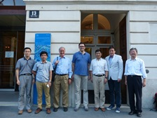
随北航计算机学院出访团，访问慕尼黑工业大学、维也纳工业大学等
30/07/2014
出访德国慕尼黑工业大学、奥地利维也纳工业大学、卢森堡大学、荷兰埃因霍温
工业大学等，围绕安全关键系统和软件技术与上述大学进行学术与教学交流，签署
一系列合作备忘录

邀请法国图卢兹大学Filali教授和Bodeveix教授访问北航计算机学院
25/04/2014
邀请法国图卢兹大学计算机信息研究所（IRIT）的两位教授13日-24日到北航计算机学院短期访问交流。
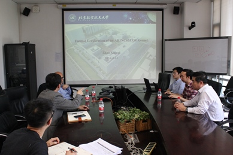
课题组与图卢兹大学专家进行学术讨论
21/04/2014
组织课题组与图卢兹大学的Filali教授和Bodeveix教授，在安全关键实时操作系统模型与验证、处理器综合设计及形式验证等方面开展学术讨论。
组织北航、图卢兹大学、中国商用飞机有限责任公司交流会
17/04/2014
组织北航、图卢兹大学、中国商飞进行航空适航认证技术交流。
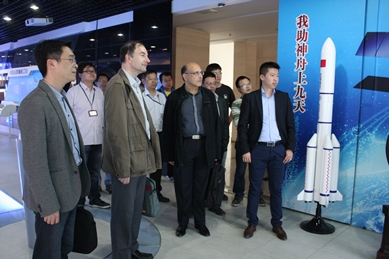
组织图卢兹大学专家到北京神舟航天软件技术有限公司访问
15/04/2014
在北航计算机学院-神舟软件联合实验室框架下，组织图卢兹大学专家到神舟软件公司访问
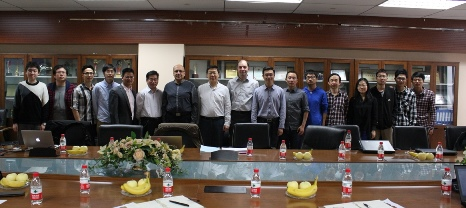
在计算机学院组织“安全关键实时系统系列讲座”
14/04/2014
邀请图卢兹大学两位教授在计算机学院开设“安全关键实时系统系列讲座”，包括“函数式程序设计语言：OCAML”开放课程和DO-178C工具鉴定、Coq定理证明、B方法等3个学术报告。
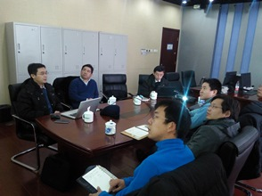
在北京神舟航天软件技术有限公司做实时操作系统验证/安全认证技术报告
02/01/2014
2014年1月2日，代表北航计算机学院应邀到北京神舟航天软件技术有限公司开展技术交流和合作研讨，做实时操作系统验证/安全认证技术报告。
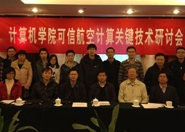
组织召开计算机学院可信航空计算关键技术研讨会
11/11/2013
2013年11月11日，计算机学院可信航空计算关键技术研讨会在北京世纪金源香山商旅酒店成功举行。
会议由本人组织召开。
会议由本人组织召开。
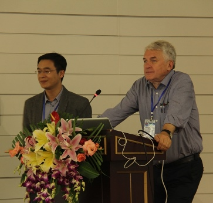
I chaired a tutorial on SafeMOVE 2013
10/10/2013
This tutorial session "Model Based Software and Systems Engineering: Elements of Seamless Development" is presented by Manfred Broy from Technische Universität München.
第一届安全关键软件系统模型化开发与验证国际研讨会（SafeMOVE 2013）召开
09/10/2013
本次研讨会持续三天，主旨是针对国内工业部门所关注的安全关键软件的开发与验证问题，讨论安全软件及系统建模与验证技术及其在航空工业等领域的应用，分析欧洲和北美在模型化方法与技术应用方面的成功经验和典型案例，详细讲解基于模型的系统与软件协同分析、设计与验证方法，及其在航空工业等领域中的成功实践。
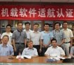
组织召开计算机学院机载软件适航认证培训会
20/09/2013
北航计算机学院举办的机载软件适航认证培训会于2013年9月11-13日顺利召开，来自中航工业第六三一研究所（西安航空计算技术研究所）、中国民航科学技术研究院、北京神舟航天软件技术有限公司、北京科银京成技术有限公司等单位的20多名学员参会，包括各单位的高层管理者、总师、部门经理、核心技术人员等。
会议由本人组织召开。
会议由本人组织召开。
组织召开计算机学院“可信航空计算平台”技术研讨会
13/09/2013
2013年9月9日在北京妙灵山庄举办了计算机学院可信航空计算平台技术研讨会。此次技术研讨会主要包括计算机学院在可信航空计算方向的总体情况介绍和部署、关键技术报告两个环节。
会议由本人组织召开。
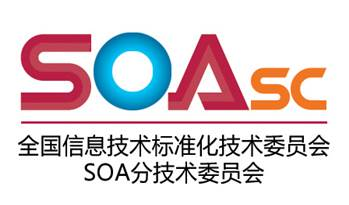
参加全国信标委SOA分技术委员会2013年第一次全会并做“工程工作组”工作报告
05/07/2013
全国信息技术标准化技术委员会SOA分技术委员会（筹）于7月5日在扬州会议中心召开了2013年第一次全会。本人做SOA分委会工程工作组的工作进展报告。
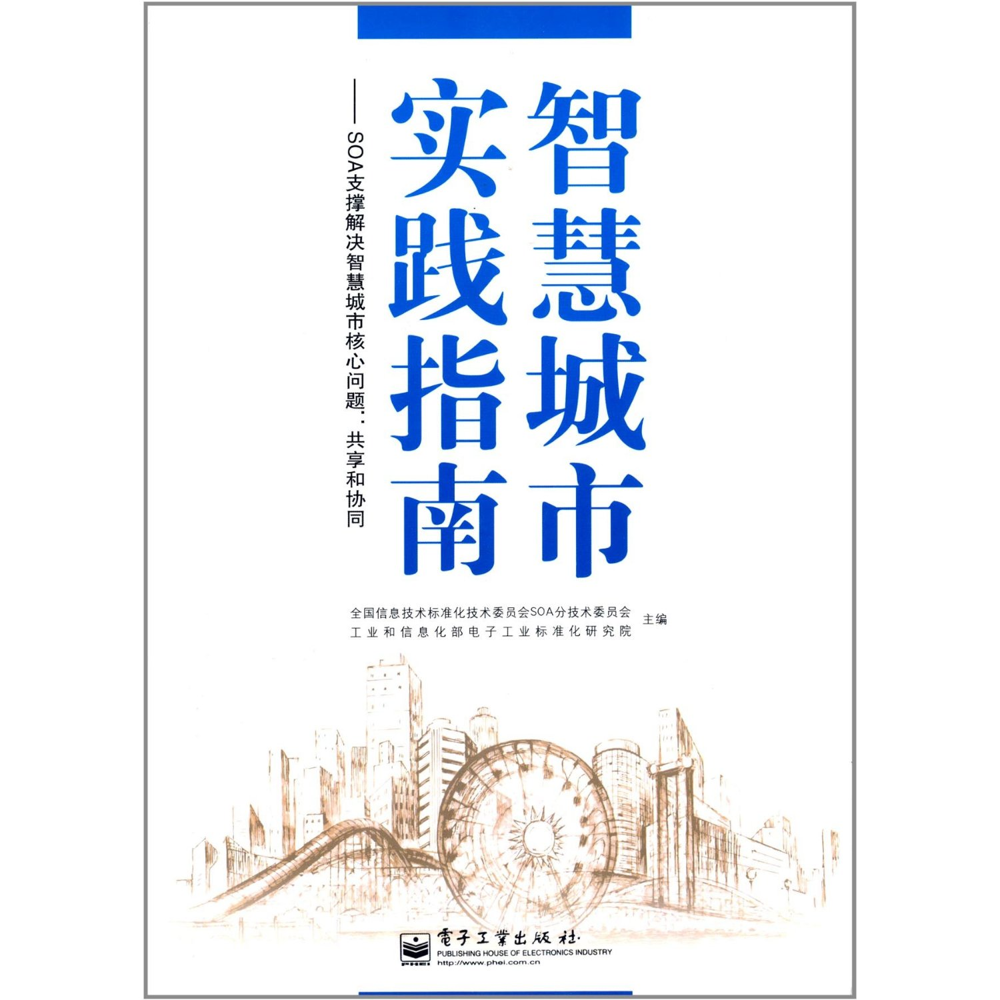
参与编著的图书《智慧城市实践指南》正式发布
04/07/2013
本人参与编著的《智慧城市实践指南》，于7月4日在对外发布。
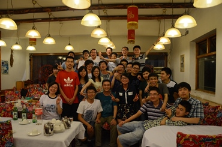
我带的2009级390615班正式毕业了
24/06/2013
北航计算机学院本科2009级390615班。
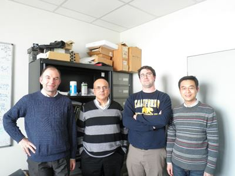
Collaboration Discussion on Formal Verification of RTOS kernel in IRIT
06/03/2013
A technical discussion on formal verification of Real-time Operating System (RTOS) kernels in the ACADIE group of IRIT.
With Prof. Mamoun Filali, Jean-Paul Bodeveix from IRIT and Prof. Jerome Hugues from ISAE.
获得全国信标委SOA分技术委员会2012年度卓越贡献奖
12/12/2012
参加全国信标委SOA分技术委员会2012年第二次全会并做“工程工作组”工作报告
12/12/2012
全国信息技术标准化技术委员会SOA分技术委员会于2012年12月12日在北京召开了第七次全会。本人做SOA分委会工程工作组的工作进展报告。
参加全国信标委SOA分技术委员会2012年第一次全会并做“工程工作组”工作报告
28/06/2012
全国信息技术标准化技术委员会SOA分技术委员会（筹）于6月28日在北京新世纪日航酒店召开了2012年第一次全会。本人做SOA分委会工程工作组的工作进展报告。
参加国际标准化组织ISO/IEC JTC1/SC7全会，并担任WG7研究组组长
28/05/2011
2011年5月22日-27日，作为中国国家成员体成员参加国际标准化组织ISO/IEC JTC1/SC7（软件和系统工程分技术委员会）。
代表中国就我国提交的两个潜在新工作项目提案做了演讲，并担任研究组组长。